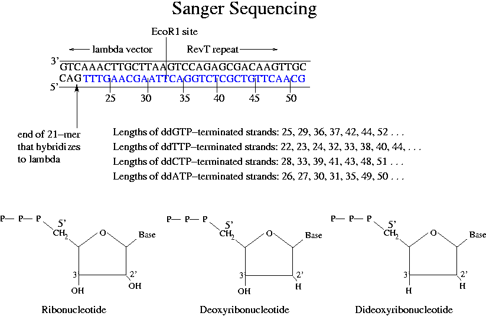
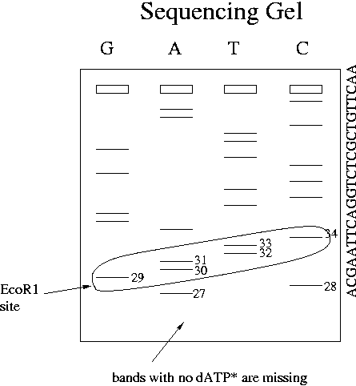

Day 9 Evening Lecture Notes
Steve Williams, Smith College
June 14, 2004
Plasmids take two forms:
For accurate comparison of fluorescence intensities in gels, the contributions from both coiled and uncoiled plasmid markers should be added and compared to the unknown band.
The most important technique is variously known as Sanger sequencing, dideoxy sequencing, chain termination sequencing or enzymatic sequencing. To sequence, we need template DNA, DNA polymerase, a sequencing primer, 4 dNTPS including labeled dATP, a sequencing buffer and MgCl2. After mixing, pipette aliquots to four tubes each of which contains a different dideoxynucleotide. Use about 20:1 dNTP:ddNTP. Dideoxyribonucleotides terminate DNA synthesis because DNA polymerase cannot add another dNTP if there is no hydroxyl group at the 3' end of the chain. After each G on the newly synthesized strand, a finite number of molecules, perhaps 1/1000, will incorporate a ddGTP and terminate. Elongated molecules in the ddGTP tube will therefore have a specific distribution of lengths: 25, 29, 36, 37, 42 . . .

Run the solutions from the 4 tubes in separate lanes on a thin, high-density polyacrylimide sequencing gel. Polyacrylimide gels allow separation of single base-pair MWs and there permit sequences to be read off. The shortest molecules may have no labeled dATPs and may not show in the gel.
Sanger sequencing started in the 1970's and originally used radioactive labeling.

The last 4 steps are now completely automated. The NEB/MBP course was started 19 years ago when Steve and Bart developed a method to use 35S rather than 32P for sequencing. 35S bands were thinner and could be 50 bases higher up a gel. They started a course to teach 35S sequencing and decided to include a segment on cloning. The rest is history.
Up Previous Next